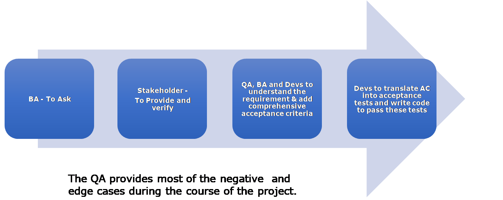

Why Acceptance Criteria!
The Final product should work as expected.
Everyone wants to create the product that customers (and their customers) love. The product should be:
- As per customer’s expectation - Solution Fit & Market Fit
- Defect-free
- Early to market / without delays
- Within budget
- Changes post-go-live should be based on further feedback from customers
Is it possible to achieve all above? Yes - With the help of acceptance criteria!!
Acceptance criteria =
- What customer needs
- Basis for Tests
- Consideration for Estimation
- Limited & Clear
Software Development without acceptance criteria :
- Six blind men and the Elephant - everyone understands the system in their individual perspective. https://www.jainworld.com/literature/story25.htm
- Requirement = number of team members (PO, BA, Dev, QA) * their perception of the Requirement!
- Result = A product neither customer nor their customer likes!
- Vague Customer requirements -> Team’s own Interpretation of requirements -> ambiguous story and expectation -> Product failure
How should the ‘Acceptance Criteria’ be:
- Clear & Simple of ‘What’
- Achievable
- To the point
- Testable
- Independent
- Concise
- User story conforming to the INVEST Principle
- 1 User story may have up to 5 to 7 Acceptance criterion.
- Break down the User story if possible if you have many more ACs
- Functional & Non Functional both !
- “What should and shouldn’t happen.”
- Business gets to decide to move ahead if AC met or not met
Responsibility of :
- BA - To Ask
- Stakeholder - To Provide and verify
- QA, BA and Devs to understand the requirement & add comprehensive acceptance criteria
- Devs to translate AC into acceptance tests and write code to pass these tests
- QA provides the bulk of the negative and edge test cases.

Why being agile helps: Edge case ACs are identified during regular showcases to the user, and also while developing and exploring the system.
Detailed test cases usually emerge only after the user uses the system and realizes gaps in their own understanding of the business.
88Working with Acceptance Criteria :**
- Dev writes an expectation via test and fulfills via code
- QA verifies and signs off the tests that the Devs write
- QA write End to End Tests
- QA sanity checks the system and identifies issues using Exploratory testing
Why Dev & QA to be part of Requirement specification meeting for the upcoming Sprints & define acceptance criteria :
- Helps understand the requirement/feature better
- Helps identify the missing details
- As a result of discussion - a Better understanding of the scope, and the complexity of the feature(s)
- Many defects prevented
- Much lesser Change Requests
- Limited rework for defect fixes
- Reduces the cycle of code + deploy + test
- Avoid delays in delivery
- Enhanced Quality!
- Early to Market!
- Make money earlier :)
Acceptance Criteria for Cross-Functional Requirements:
Define a set of acceptance criteria applicable across stories by default.
Should be considered as part of each story being worked on and reviewed
e.g. for presentation styles, for performance, for operational readiness, for response times, and so on.